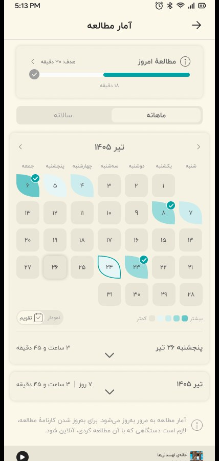
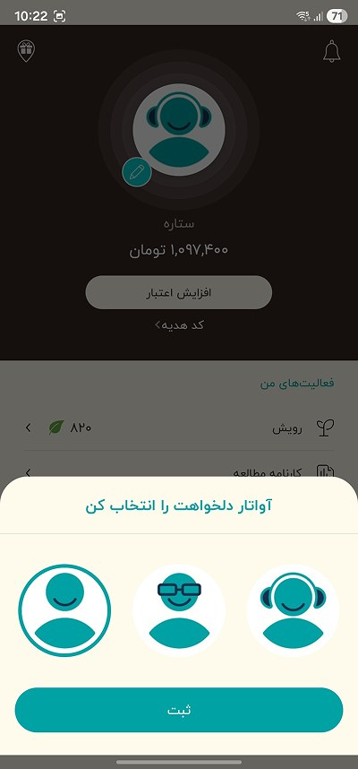
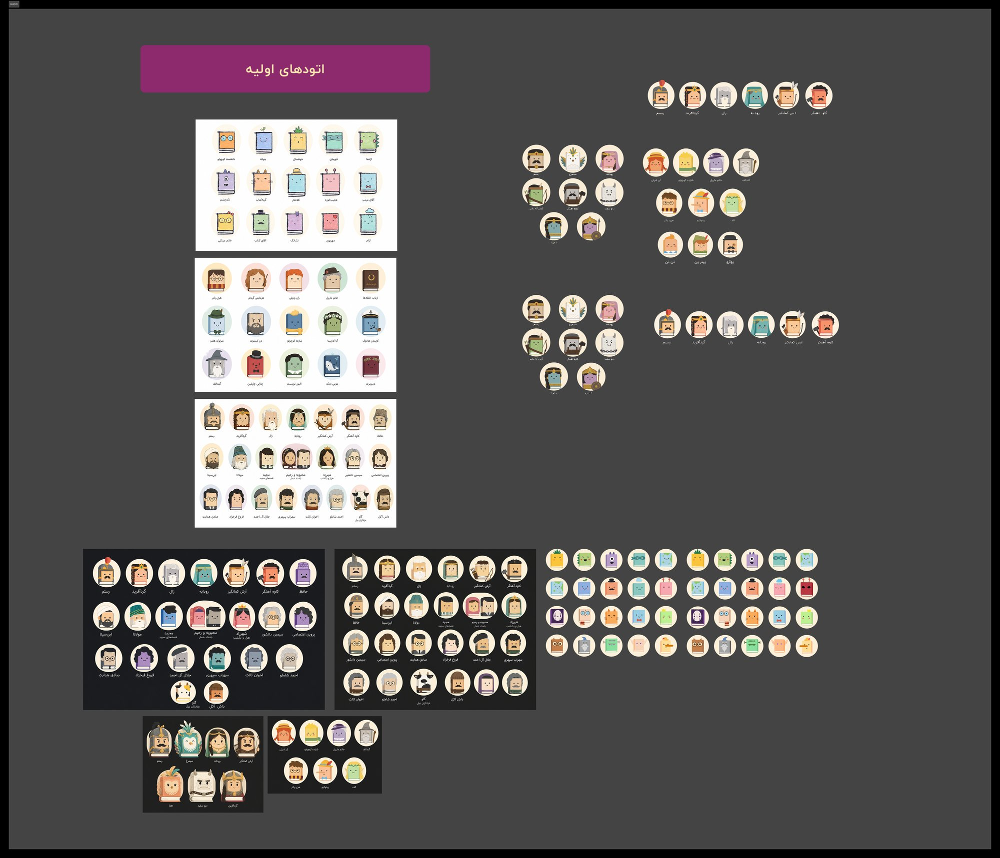
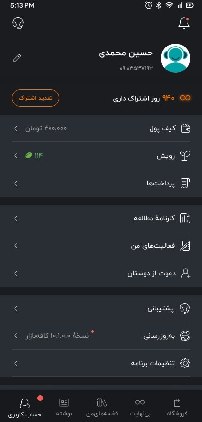

Android · Solo · 5 weeks
C&A TimeTide
A shift planner for C&A Netherlands staff. My survey of 21 employees found that 70% struggled to follow the manual schedule, so I designed remote access to shifts, reminders and holiday requests.

For the past two years I have been the sole UI/UX designer at Taaghche, an online bookshop and reading app. I take features from the product brief to shipped screens on Android, iOS and web, working with product, engineering and marketing. Before that I spent six years in architecture, interior and visual design. I still draw every day.
Open to UI/UX designer roles·Maastricht, NL·Dutch citizen, no visa sponsorship needed

Taaghche's interface is in Persian and reads right to left. I kept the original designs unchanged and added English captions to explain each screen. Click or tap any screen to see it full size.


An LLM chat inside the e-book reader, designed around token cost, trust and content policy.
Read case study →


A subscription checkout with discounts, wallet credit, bank payment and buy-now-pay-later installments.
Read case study →


A personal dashboard with a calendar heatmap, charts and daily goals.
Read case study →


A story-style recap of each reader's year, ranked against their peers.
Read case study →


Book-shaped characters that replaced the generic profile placeholders, validated with a user survey.
Read case study →The product team wanted readers to be able to ask questions about what they were reading, without leaving the e-book. I designed the whole experience, from the first idea to the shipped feature. That included the entry point, the chat, usage limits, feedback, and every error and empty state.
Every message costs tokens, so long open-ended chats get expensive fast. Answers from a language model can be wrong. The feature also had to follow content policies. The design had to keep conversations short and focused while still feeling useful and friendly.
The assistant opens from the menu that appears when a reader selects text. I explored three toolbar layouts for where the new action sits next to highlight, copy, share and translate. The goal was an action people would find without crowding the tools they already use.


The selected passage stays pinned at the top of the chat, so every answer has a clear context. One-tap prompts like “Explain this part” and “Say this more simply” cover the most common needs. They keep messages short, which keeps costs down.


Instead of cutting people off without warning, readers see a weekly allowance, such as “7 of 10 messages left”, and when it resets. Each conversation also has a cap. When a reader hits it, a clear message invites them to start a new chat, which keeps the context window short.


An “Experimental” badge and an info sheet explain that answers may be inaccurate. They also say the assistant only sees the selected text, not the whole book. Thumbs up and down on every answer, plus an optional “What was wrong with this answer?” form, give the product team a steady stream of quality signals.


I reviewed the developer builds against the designs and logged precise fixes. The notes on the right are from that review round. The final screens are from the shipped app, with the new “Summarize this part” action.

Interface in Persian, read right to left · captions translated
The assistant shipped inside the reader as an experimental feature. Usage limits and focused prompts were part of the design from the start to control token cost, and the feedback on every answer gives the product team a steady measure of answer quality.
What I’d measure: the thumbs-up rate on answers, the average number of messages per conversation (which drives token cost), and how many readers use the assistant again within a week.
Taaghche added Snapp Pay, a buy-now-pay-later provider, to its subscription checkout. I redesigned the checkout on mobile and web so readers always know exactly what they will pay, how and when, before they tap the button.
Discount codes and wallet credit sit above the payment options and show the amount saved right away. A price breakdown lists price, discount, wallet credit and the amount to pay. On desktop it stays next to the form; on mobile it moves directly above the button.

The main button changes with the chosen method and shows the exact amount: “Pay online · 118,800”, or “Pay with Snapp Pay · 29,700” for the first of four interest-free installments. Readers always know what they are agreeing to before they confirm.
When installments are not available for an amount, that option is disabled and explains why, instead of failing after the tap. When discounts cover the full price, the payment methods switch off and the button simply reads “Get subscription”.


Interface in Persian, read right to left · captions translated
Every payment situation has a designed state, so no reader reaches a dead end or an unexpected total. The checkout was built and tested in staging on mobile and desktop.
What I’d measure: checkout completion rate, the share of subscriptions paid in installments, and support tickets about unexpected charges.
A personal dashboard that turns reading activity into something readers can scan at a glance and act on. It combines a daily goal, a monthly calendar, a yearly heatmap and a bar-chart view, with summaries for today, this month and this year.
A progress bar for today's goal leads the page. Below it, a monthly/yearly switch changes the calendar, and each day's color shows how much the reader read. Expandable rows give the exact time for the selected day and period.
I wrote down the interaction rules for developers. For example, bar heights stay on one scale within a month or year, and when you move to another month the last day is selected by default.

Interface in Persian, read right to left · captions translated
Readers get one page that answers “how am I doing?” at a glance, with detail one tap away. Written interaction rules meant developers did not have to guess how charts and selections behave.
What I’d measure: the share of readers who set a daily goal, how many days a week they reach it, and how often they come back to the stats page.
At the new year, every reader got a personal, story-style recap of their reading. It showed how much they read, when they read, what they loved, and how they compared with other Taaghche readers. The recap was built to be shared.
A recap is only as good as the data behind it. I worked closely with the backend developers to find out which statistics we could calculate reliably. One example was how precisely we could rank each reader against their peers, as in “more than 93% of Taaghche users”. The story was then shaped around what was technically achievable.
Grid paper, tape, polaroids and pressed flowers turn statistics into something that feels personal and collectible. Big numbers lead every slide. A chapter label and progress bars at the top tell readers where they are in the story.


Each reader gets a persona based on the time of day they read most: early-bird rooster, sunny afternoon cat, calm night panda, night owl and more. A time-of-day scale under each card shows why they got that result.


Real users produce very different numbers. I designed and tested variants for values from four to six digits, for one to three books per season, and for an empty season. Every reader's version holds together, not only the ideal one.


Interface in Persian, read right to left · captions translated
The wrap-up turned a year of reading data into a personal, shareable story for each reader. Because feasibility was agreed with the backend team before the visuals were polished, every statistic in the design could actually be calculated.
What I’d measure: how many readers reach the last slide, the share rate for each slide, and new visits that come from shared stories.
Profiles on Taaghche used three generic placeholder figures. I designed and illustrated a set of avatars that combine the brand with what readers love: book-shaped characters drawn from Persian epics and world literature. They appear on the profile page and next to every user review.
The profile header, the avatar picker and user reviews all used the same three anonymous figures. For a product built around stories, it was a missed chance for readers to show who they are.


The team worried about how readers would react to character avatars. Before any development started, I showed the set to users in a survey and preference test. The feedback was very positive, so the design moved to development with confidence.
The final set mixes Persian heroes like Rostam, Simurgh and Gordafarid with world-literature favorites like Alice, the Little Prince and Anne of Green Gables. Every character is drawn as a book, so the set reads clearly as Taaghche.

Interface in Persian, read right to left · captions translated
The survey and user tests confirmed the direction. I handed the full set and the picker flow to the developers, and they implemented it on Android, iOS and web.
What I’d measure: the share of readers who choose an avatar, and whether readers with a custom avatar post more reviews.
As Taaghche's only designer, I am the link between product, engineering and marketing. Hand-off is a core part of the job, and I have learned that a good hand-off fits the person receiving it.
I ran design and stakeholder meetings to turn requests into a clear problem, agreed scope, and decisions everyone could see.
I checked data and technical limits with backend and front-end developers before polishing, so designs stayed buildable.
Some developers wanted every detail and a walkthrough meeting. Others worked straight from a well-organized Figma file. I adjusted the format for each.
I reviewed builds against the designs, logged precise fixes, and covered empty, error, loading and edge states.
Two years of shipping have taught me that the hand-off is part of the design, not a step after it.
End-to-end projects with user interviews, surveys, flows, wireframes, usability tests and high-fidelity prototypes. View the full case studies in Figma ↗
A shift planner for C&A Netherlands staff. My survey of 21 employees found that 70% struggled to follow the manual schedule, so I designed remote access to shifts, reminders and holiday requests.

A friendly habit tracker where your habits grow a little seed character. I drew all the illustrations, set up the branding, and built a landing page and revenue plan.

A sustainability magazine with a personal dashboard to set reading goals, and to save, listen to and share articles. Includes a component library and basic HTML and CSS.

On paper and digitally, I fill sketchbooks with characters, colors and small stories. That habit is why I could illustrate Taaghche's avatars myself instead of briefing an agency.
My architecture background shows up too: physical models, plans and a feel for structure and space. Those habits carry over to layout, hierarchy and systems thinking in UI.
I studied urban design at Saxion and earned my Master of Architecture at Zuyd University in Maastricht. After years of designing buildings, interiors, websites and illustrations, I moved into digital product design with Ironhack’s UX/UI bootcamp in 2023. At Taaghche I became the only designer for a product with more than two million active users, and I learned to own the whole design process and to work with every team that touches a feature.
I care about interfaces that feel friendly and clear, about designs developers enjoy building, and about bringing some illustration and warmth into everyday products.